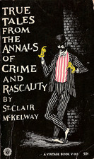

Saturday, April the 16th, 2011
back to: title, date or indexes
Bashed On The Bonce With A Sap By A Copper is a fascinating addition to what St Clair McKelway (1905–1980) called the “annals of crime and rascality”. It is subtitled The Collected Arrests Of Detective Captain Cargpan, Volume One, which has devotees of the legendary policeman salivating with pleasure at the prospect of further bashing collections.
For the time being, though, even Cargpan's greatest fans ought to be sated by this rip roaring record of thousands of arrests. It includes famous cases such as Dinsmore the budgerigar trainer, the weighted jam-jar man, and the spectral cardigan-knitter of Cardiganshire, together with a host of the undeservedly obscure and neglected, including the beekeeper Plath and the toastrack poisoner of Box. The Detective Captain himself emerges as perhaps a more complex figure than hitherto acknowledged. I was surprised to learn, for example, that on many occasions he had his sidekicks rough up a culprit before bashing them on the bonce with his sap. Sometimes he whacked his lead-weighted sap on their bonce and in the kidneys. And it comes as a complete revelation to learn that he sometimes lit his pipe, crammed with acrid Serbian pipe tobacco, with one hand while simultaneously sapping a malefactor with the other. Most pipe smokers need one hand to hold the pipe and the other to steady the lit lucifer. It is a measure of Cargpan's insouciance that he was able to deploy his pipe-igniting skills with such aplomb in the face of incorrigible villainy.
Among the incidental pleasures of the book are the glimpses we get of the Detective Captain arriving at, and leaving, the scenes of arrest; a virtuoso description, covering forty pages, of the glint in his eye; and the lyrical evocation of the cellar down at the nick, its appurtenances and décor, the scene of so many vivid post-arrest roughings-up. For, in spite of that subtitle, this is not a mere record of Cargpan's arrests alone. We are led from arrest to confession in almost every case, whether the miscreant blubs like a baby instantly, or it takes the sidekicks as long as ten minutes to extract an admission of their squalid criminality. In almost every case, note, because of course now and then one bash from Cargpan's sap was all it took to send a ne'er-do-well spinning into the fiery satanic realm of death.
If I have one criticism of the book, it is the absence of lurid high definition colour photographs of hapless villains reaping the grisly deserts of their malfeasance. Otherwise, it is a cracking good read, in more ways than one.

Hooting Yard on the Air, June the 23rd, 2011 : “Bashed On The Bonce With A Sap By A Copper” (starts around 00:15)